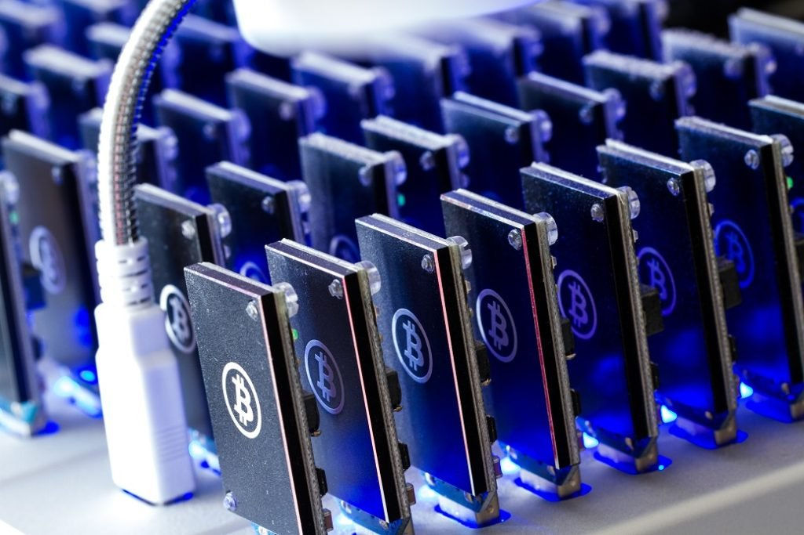

TECHNOLOGIN |
TECHNOLOGIN |
Where The Knowledge Begins
TECHNOLOGIN |Where The Knowledge Begins
 In cryptocurrency networks, mining is a validation of transactions. For this effort, successful miners obtain new cryptocurrency as a reward. The reward decreases transaction fees by creating a complementary incentive to contribute to the processing power of the network. The rate of generating hashes, which validate any transaction, has been increased by the use of specialized machines such as FPGAs and ASICs running complex hashing algorithms like SHA-256 and scrypt. This arms race for cheaper-yet-efficient machines has existed since the day the first cryptocurrency, bitcoin, was introduced in 2009. With more people venturing into the world of virtual currency, generating hashes for this validation has become far more complex over the years, with miners having to invest large sums of money on employing multiple high performance ASICs. Thus the value of the currency obtained for finding a hash often does not justify the amount of money spent on setting up the machines, the cooling facilities to overcome the heat they produce, and the electricity required to run them. As of July 2019, bitcoin's electricity consumption is estimated to about 7 gigawatts, 0.2% of the global total, or equivalent to that of Switzerland.
Some miners pool resources, sharing their processing power over a network to split the reward equally, according to the amount of work they contributed to the probability of finding a block. A "share" is awarded to members of the mining pool who present a valid partial proof-of-work.
As of February 2018, the Chinese Government halted trading of virtual currency, banned initial coin offerings and shut down mining. Some Chinese miners have since relocated to Canada. One company is operating data centers for mining operations at Canadian oil and gas field sites, due to low gas prices. In June 2018, Hydro Quebec proposed to the provincial government to allocate 500 MW to crypto companies for mining. According to a February 2018 report from Fortune, Iceland has become a haven for cryptocurrency miners in part because of its cheap electricity.